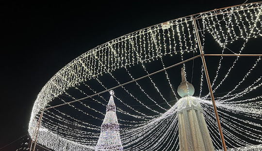
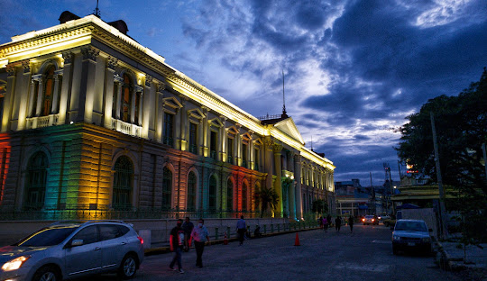

Our adventure in City A was more than just a visit; it was a deep dive into a culture rich with history and culinary excellence. Here's what made City A unforgettable for us.

Exploring the landmarks of City A, we were captivated by the stories behind each architectural marvel...

City A's cuisine is a palette of flavors, each dish narrating its own story of tradition and innovation...
Immersing ourselves in the culture of City A was like walking through a living museum, each street and alley echoing the tales of yesteryears...
Among the myriad of experiences, one particular moment stood out for us in City A. It was when...